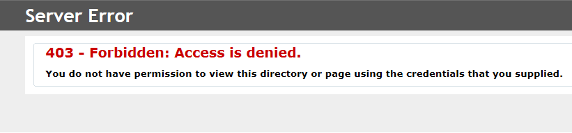
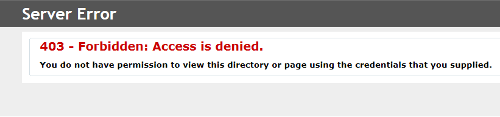
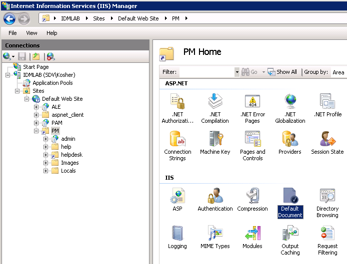
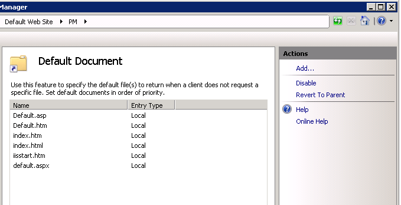

When trying to browse to any portal, you get "Error 403 - Access is denied"

The 403 error can be caused by several reasons. The most common reasons are:
1. You are trying to access the site via HTTP when HTTPs is required.
To enable access via regular HTTP make sure that Require SSL check-box is not enabled.
2. Default document IIS feature is not enabled.
To check this:

The 403 error can be caused by several reasons. The most common reasons are:
1. You are trying to access the site via HTTP when HTTPs is required.
To enable access via regular HTTP make sure that Require SSL check-box is not enabled.
- Launch the IIS Manager
- Navigate to the PM virtual directory (Default Web Site/PM by default).
- In the central pane double-click SSL Settings
- Check settings, change if necessary
2. Default document IIS feature is not enabled.
To check this:
- Launch the IIS Manager
- Navigate to the PM virtual directory (Default Web Site/PM by default).
- In the central pane double-click Default Document
- In the right pane click Enable (if there is no Enable option there, but Disable is, it means that the feature is enabled)
 